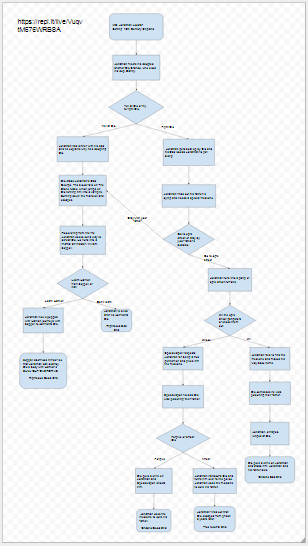

Your character is the "Doom Slayer" and you must survive up to 3 rounds fighting off demons. The scoring system works using a wave system, if the player is still alive after a certain amount of time then the wave number will go up. The use of randomness occurs in the demons' spawn times. The game gets more difficult by spawning demons from both sides and gets faster over time. The game ends when the demons reach the Doom Slayer and his health drops to 0, screen or if the player is able to survive all 3 waves.
We chose to make this game because it was the first thing we can up with. The inspiration of this game came from the original Doom game from 1993. One of our successes were our sprites which we found that came with animations already included with the sprite. The gameplay also resembles the original cover art of the game which I thought was cool. One problem we ran into were platforms which we scrapped because the stage was too small for the large enemies we wanted. Another are the shooting mechanics and how the sprites would animate when pressing the fire button. If I had more time and resources I would have added a larger variety of enemies and possibly a boss level at the end. I also would polish the shooting mechanics a bit.
This was one of the algorithms used for the bullet that your character shoots in game. It is an algorithm because it involves muliple steps and conditions that the sprite must follow. When pressing "A" the variable will become -90 which makes the bullet travel left because its the direction your character is facing and does the opposite when you press "D".
19th-century England, a youth named Dio Brando is adopted by the wealthy George Joestar to repay Dio's father for seemingly saving his life. Jonathan Joestar, who aspires to become a gentleman, finds himself shunned by his family and friends as part of Dio's plot to take the Joestar fortune for himself.
During the development for our python story we first borrowed the plot of one of our favorite shows, "Jojo's Bizarre Adventure" and put are own spin on the first season. We took apart the story and put the scenes into a flow chart while branching them out depending on the decisions made by the player and made different endings for each branch. After figuring out the story we made each scene into functions. The scene is defined as "line" in order to edit how fast or slow the text moves for each function. After the scene ends it moves on to another depending on the decisions made by the player. One difficulty we encountered early on was when we played the program, it didn't play the first scene. After looking at the example, I noticed that you had to run the function from the bottom line of the program. By abstracting our code into functions, we are organizing the code and can change the speed of how each individual function is read to the player on screen so that longer texts appear faster. I liked the story Three of Swords because of how drastic the endings can change from good to bad because of a single decision.